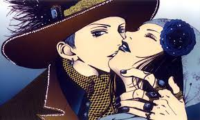
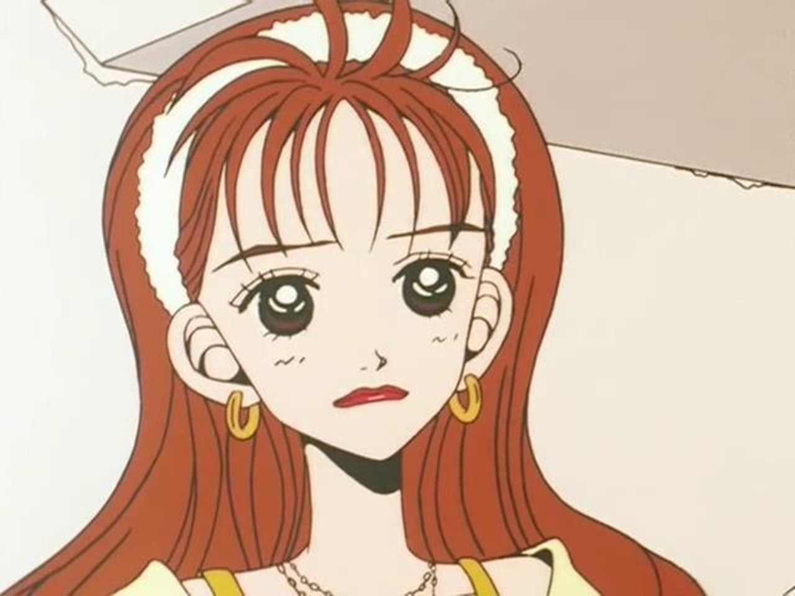

Paradise Kiss, ou simplesmente ParaKiss, é uma série de mangá criada por Ai Yazawa, que mistura suas duas paixões: a moda e os mangás. Inicialmente como um mangá, foi publicado na revista de moda Zipper entre 1999 e 2003; depois surgiu o anime, com 12 episódios (tem 5 volumes).
A protagonista, Kouda Mikako, é um estudante de "Yaza Gaku". Especializada em design de moda, Mikako sonha em se tornar designer de moda com sua própria marca. Vivendo ao lado dela está seu amigo de infância, Yamaguchi Tsutomu. Mesmo sendo próximos desde jovens, eles compartilham uma amizade platônica. No entanto, Tsutomu vem ganhando popularidade, especialmente com as meninas, porque ele parece se assemelhar a um vocalista popular de uma banda e de alguma forma, Mikako começa a vê-lo sob uma luz diferente. Esta é uma história sobre como os jovens lidam com sonhos, amor e amizade.
